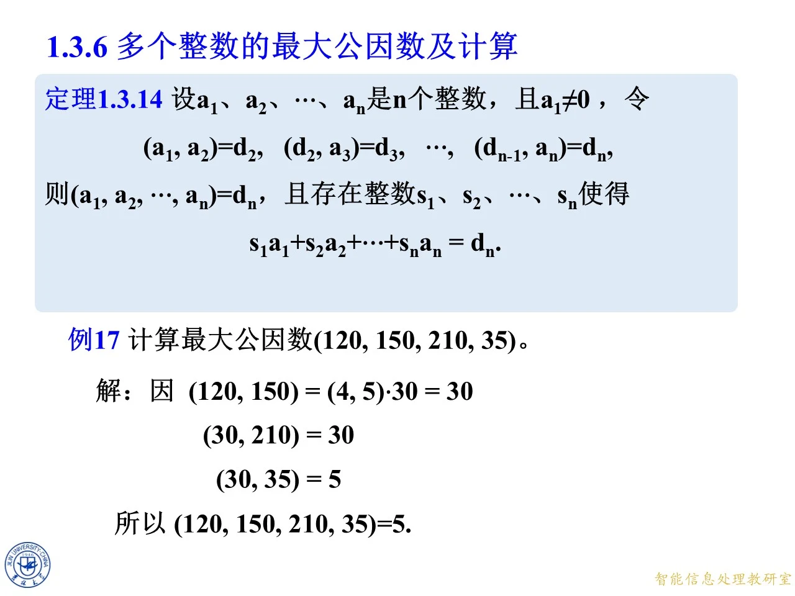
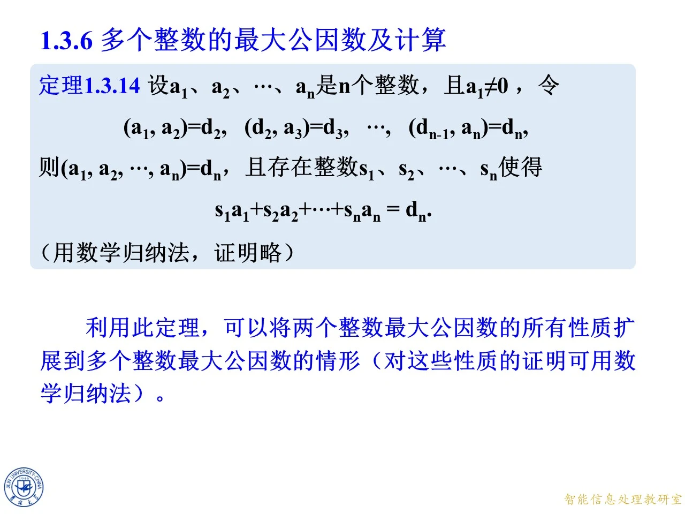
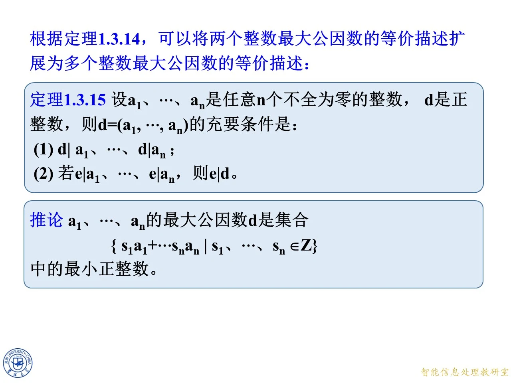

本课是第一章 1.3 节「最大公因数与广义欧几里得除法」的最后一小节 1.3.6，任务是把前文针对两个整数的最大公因数理论推广到任意多个整数。核心内容有三块：用「逐对递推」的实际算法算出例 17 的四个数；把它背后的规律总结成定理 1.3.14（含多元 Bézout 等式）；再把两个整数的最大公因数等价描述推广为定理 1.3.15 和推论。本页与随后 1.4 节的最小公倍数相衔接，也是后续解同余式时常用的工具。
课件版本与页码对应
◆ p.343-353 ｜重复收录的页码
本节的 12 组幻灯片在网站收录的三份 PDF 中是同一套页面：「9月11日授课（2）.pdf」与「第一章第3节-原版 (1).pdf」的 p.343-353 逐页相同，且与「9月9日授课.pdf」的 p.661-671 为同一批幻灯片（相同的动画帧与素材）。对应关系为：p.343 即 p.661（问题页），p.344-348 即 p.662-666（例 17 动画帧），p.349-351 即 p.667-669（定理 1.3.14 陈述），p.352 即 p.670（证明说明），p.353 即 p.671（定理 1.3.15 与推论）。因此 p.343-353 不再逐页重讲，下文正文按 9月9日版的页码 p.661-671 展开。
提出问题：四个数的最大公因数怎么算
◆ p.661 ｜怎样计算最大公因数 (120, 150, 210, 35)？
本页抛出本节要解决的问题：怎样计算最大公因数 ( 120 , 150 , 210 , 35 ) (120, 150, 210, 35) ( 120 , 150 , 210 , 35 )
例 17：计算 ( 120 , 150 , 210 , 35 ) (120, 150, 210, 35) ( 120 , 150 , 210 , 35 )
◆ p.662-666 ｜例 17 的逐步演算（p.662-666 为同一张幻灯片的动画逐步帧；另两份 PDF 中对应 p.344-348，p.344-348 为重复页）
例 17 计算最大公因数 ( 120 , 150 , 210 , 35 ) (120, 150, 210, 35) ( 120 , 150 , 210 , 35 )
题目：求 gcd ( 120 , 150 , 210 , 35 ) \gcd(120, 150, 210, 35) g cd( 120 , 150 , 210 , 35 )
思路：按「从左往右逐对接力」计算——先求前两个数的最大公因数，再把结果与第三个数求最大公因数，依此类推。
每一步推导：
求 ( 120 , 150 ) (120, 150) ( 120 , 150 ) 120 = 30 × 4 120 = 30 \times 4 120 = 30 × 4 150 = 30 × 5 150 = 30 \times 5 150 = 30 × 5 30 30 30 ( 120 , 150 ) = ( 4 , 5 ) ⋅ 30 = 1 ⋅ 30 = 30 , (120, 150) = (4, 5) \cdot 30 = 1 \cdot 30 = 30, ( 120 , 150 ) = ( 4 , 5 ) ⋅ 30 = 1 ⋅ 30 = 30 , ( 4 , 5 ) = 1 (4, 5) = 1 ( 4 , 5 ) = 1
求 ( 30 , 210 ) (30, 210) ( 30 , 210 ) 210 = 30 × 7 210 = 30 \times 7 210 = 30 × 7 30 ∣ 210 30 \mid 210 30 ∣ 210 ( 30 , 210 ) = 30 (30, 210) = 30 ( 30 , 210 ) = 30
求 ( 30 , 35 ) (30, 35) ( 30 , 35 ) 30 = 2 × 3 × 5 30 = 2 \times 3 \times 5 30 = 2 × 3 × 5 35 = 5 × 7 35 = 5 \times 7 35 = 5 × 7 ( 30 , 35 ) = 5 (30, 35) = 5 ( 30 , 35 ) = 5 35 = 1 × 30 + 5 35 = 1 \times 30 + 5 35 = 1 × 30 + 5 30 = 6 × 5 + 0 30 = 6 \times 5 + 0 30 = 6 × 5 + 0
结论：所以 ( 120 , 150 , 210 , 35 ) = 5 (120, 150, 210, 35) = 5 ( 120 , 150 , 210 , 35 ) = 5
以上数值已用程序复核：( 120 , 150 ) = 30 (120,150)=30 ( 120 , 150 ) = 30 ( 30 , 210 ) = 30 (30,210)=30 ( 30 , 210 ) = 30 ( 30 , 35 ) = 5 (30,35)=5 ( 30 , 35 ) = 5 ( 120 , 150 , 210 , 35 ) = 5 (120,150,210,35)=5 ( 120 , 150 , 210 , 35 ) = 5
拓展 （课件外补充）：第一步的提公因数依据是 1.3 节已有的性质 ( m a , m b ) = m ( a , b ) (ma, mb) = m(a, b) ( ma , mb ) = m ( a , b ) m m m 120 = 30 × 4 120 = 30 \times 4 120 = 30 × 4 150 = 30 × 5 150 = 30 \times 5 150 = 30 × 5 ( 4 , 5 ) (4,5) ( 4 , 5 )
拓展 （课件外补充）：例 17 还能顺便产出一条多元 Bézout 等式。由 30 = 150 − 120 30 = 150 - 120 30 = 150 − 120 5 = 35 − 30 5 = 35 - 30 5 = 35 − 30 5 = 35 − ( 150 − 120 ) = 120 − 150 + 0 × 210 + 35 , 5 = 35 - (150 - 120) = 120 - 150 + 0 \times 210 + 35, 5 = 35 − ( 150 − 120 ) = 120 − 150 + 0 × 210 + 35 , ( s 1 , s 2 , s 3 , s 4 ) = ( 1 , − 1 , 0 , 1 ) (s_1, s_2, s_3, s_4) = (1, -1, 0, 1) ( s 1 , s 2 , s 3 , s 4 ) = ( 1 , − 1 , 0 , 1 ) s 1 ⋅ 120 + s 2 ⋅ 150 + s 3 ⋅ 210 + s 4 ⋅ 35 = 5 s_1 \cdot 120 + s_2 \cdot 150 + s_3 \cdot 210 + s_4 \cdot 35 = 5 s 1 ⋅ 120 + s 2 ⋅ 150 + s 3 ⋅ 210 + s 4 ⋅ 35 = 5

课件原图 · 9月9日授课 · 第 669 页 查看前后已收录原页 → 定理 1.3.14：逐对递推及多元 Bézout 等式
◆ p.667-669 ｜定理 1.3.14 的完整陈述（p.667-669 为动画逐步帧；另两份 PDF 中对应 p.349-351，p.349-351 为重复页）
例 17 的做法为什么合法？本组三页把例 17 背后的规律写成定理 1.3.14（动画逐步补全陈述）：
定理 1.3.14：设 a 1 , a 2 , … , a n a_1, a_2, \ldots, a_n a 1 , a 2 , … , a n n n n a 1 ≠ 0 a_1 \neq 0 a 1 = 0 ( a 1 , a 2 ) = d 2 , ( d 2 , a 3 ) = d 3 , … , ( d n − 1 , a n ) = d n , (a_1, a_2) = d_2, \quad (d_2, a_3) = d_3, \quad \ldots, \quad (d_{n-1}, a_n) = d_n, ( a 1 , a 2 ) = d 2 , ( d 2 , a 3 ) = d 3 , … , ( d n − 1 , a n ) = d n , ( a 1 , a 2 , … , a n ) = d n (a_1, a_2, \ldots, a_n) = d_n ( a 1 , a 2 , … , a n ) = d n s 1 , s 2 , … , s n s_1, s_2, \ldots, s_n s 1 , s 2 , … , s n s 1 a 1 + s 2 a 2 + ⋯ + s n a n = d n . s_1 a_1 + s_2 a_2 + \cdots + s_n a_n = d_n. s 1 a 1 + s 2 a 2 + ⋯ + s n a n = d n .
逐句理解：条件 a 1 ≠ 0 a_1 \neq 0 a 1 = 0 k k k k + 1 k+1 k + 1 d n d_n d n n n n d 2 = 30 d_2 = 30 d 2 = 30 d 3 = 30 d_3 = 30 d 3 = 30 d 4 = 5 d_4 = 5 d 4 = 5 n n n
◆ p.670 ｜证明方法与用途（另两份 PDF 中对应 p.352，p.352 为重复页）
本页补全定理的收尾：定理 1.3.14 用数学归纳法证明（课件注明「证明略」）；并指出——利用此定理，可以将两个整数最大公因数的所有性质扩展到多个整数最大公因数的情形，对这些性质的证明都可用数学归纳法。也就是说，定理 1.3.14 是一座「桥」：凡是已对两个整数证明的性质（如结合方式的各种等式、整除关系等），原则上都能借它归纳地搬到 n n n
拓展 （课件外补充）：课件略去的归纳证明，补全思路如下。对 n n n n = 2 n = 2 n = 2 n − 1 n - 1 n − 1 n n n d n − 1 = ( a 1 , … , a n − 1 ) d_{n-1} = (a_1, \ldots, a_{n-1}) d n − 1 = ( a 1 , … , a n − 1 ) n − 1 n-1 n − 1 d n − 1 = t 1 a 1 + ⋯ + t n − 1 a n − 1 d_{n-1} = t_1 a_1 + \cdots + t_{n-1} a_{n-1} d n − 1 = t 1 a 1 + ⋯ + t n − 1 a n − 1 d n = ( d n − 1 , a n ) d_n = (d_{n-1}, a_n) d n = ( d n − 1 , a n ) d n ∣ d n − 1 d_n \mid d_{n-1} d n ∣ d n − 1 d n − 1 ∣ a i d_{n-1} \mid a_i d n − 1 ∣ a i i = 1 , … , n − 1 i = 1, \ldots, n-1 i = 1 , … , n − 1 d n ∣ a i d_n \mid a_i d n ∣ a i i i i d n ∣ a n d_n \mid a_n d n ∣ a n d n d_n d n a i a_i a i e e e a i a_i a i e ∣ a 1 e \mid a_1 e ∣ a 1 e ∣ a 2 e \mid a_2 e ∣ a 2 e ∣ d 2 = ( a 1 , a 2 ) e \mid d_2 = (a_1, a_2) e ∣ d 2 = ( a 1 , a 2 ) e ∣ a 3 e \mid a_3 e ∣ a 3 e ∣ d 3 e \mid d_3 e ∣ d 3 e ∣ d n e \mid d_n e ∣ d n d n d_n d n ( a 1 , … , a n ) = d n (a_1, \ldots, a_n) = d_n ( a 1 , … , a n ) = d n u , v u, v u , v u d n − 1 + v a n = d n u d_{n-1} + v a_n = d_n u d n − 1 + v a n = d n d n − 1 = t 1 a 1 + ⋯ + t n − 1 a n − 1 d_{n-1} = t_1 a_1 + \cdots + t_{n-1} a_{n-1} d n − 1 = t 1 a 1 + ⋯ + t n − 1 a n − 1 s 1 a 1 + ⋯ + s n a n = d n s_1 a_1 + \cdots + s_n a_n = d_n s 1 a 1 + ⋯ + s n a n = d n s i = u t i s_i = u t_i s i = u t i i ≤ n − 1 i \le n-1 i ≤ n − 1 s n = v s_n = v s n = v

课件原图 · 9月9日授课 · 第 670 页 查看前后已收录原页 → 定理 1.3.15 与推论：最大公因数的等价描述
◆ p.671 ｜定理 1.3.15 与推论（另两份 PDF 中对应 p.353，p.353 为重复页）
本页根据定理 1.3.14，把两个整数最大公因数的等价描述扩展为多个整数的版本，含一条定理与一条推论。
定理 1.3.15：设 a 1 , … , a n a_1, \ldots, a_n a 1 , … , a n n n n d d d d = ( a 1 , … , a n ) d = (a_1, \ldots, a_n) d = ( a 1 , … , a n )
d ∣ a 1 d \mid a_1 d ∣ a 1 … \ldots … d ∣ a n d \mid a_n d ∣ a n d d d 若 e ∣ a 1 e \mid a_1 e ∣ a 1 … \ldots … e ∣ a n e \mid a_n e ∣ a n e ∣ d e \mid d e ∣ d d d d
「充要」意味着这两条既可以用来验证某个 d d d
推论：a 1 , … , a n a_1, \ldots, a_n a 1 , … , a n d d d { s 1 a 1 + ⋯ + s n a n ∣ s 1 , … , s n ∈ Z } \{\, s_1 a_1 + \cdots + s_n a_n \mid s_1, \ldots, s_n \in \mathbb{Z} \,\} { s 1 a 1 + ⋯ + s n a n ∣ s 1 , … , s n ∈ Z } n n n d d d ≥ d \ge d ≥ d d d d d d d
拓展 （课件外补充）：两条定理的条件强度不同，注意区分。定理 1.3.14 要求第一个数 a 1 ≠ 0 a_1 \neq 0 a 1 = 0 ( 0 , 0 ) (0, 0) ( 0 , 0 ) d k = 1 d_k = 1 d k = 1
拓展 （课件外补充）：「整组互素」与「两两互素」是两个不同概念。n n n ( 6 , 10 , 15 ) = 1 (6, 10, 15) = 1 ( 6 , 10 , 15 ) = 1 ( 6 , 10 ) = 2 (6, 10) = 2 ( 6 , 10 ) = 2 ( 6 , 15 ) = 3 (6, 15) = 3 ( 6 , 15 ) = 3 ( 10 , 15 ) = 5 (10, 15) = 5 ( 10 , 15 ) = 5 d k d_k d k

课件原图 · 9月9日授课 · 第 671 页 查看前后已收录原页 →